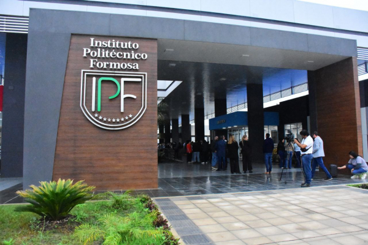
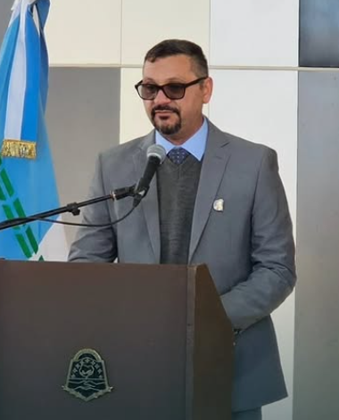
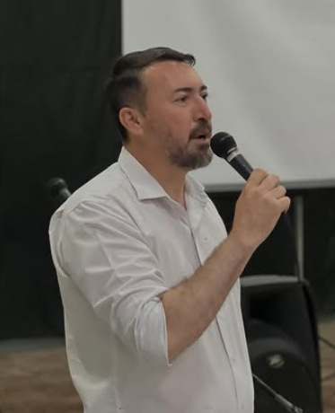
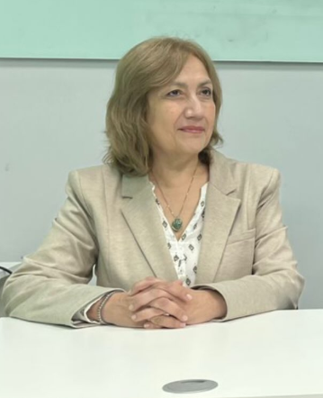

El Instituto Politécnico Formosa (IPF) fue creado el 31 de enero de 2018 mediante el decreto provincial N.º 18/2018, con el propósito de constituirse como una institución de educación superior técnica orientada a la formación de profesionales en áreas tecnológicas de alta demanda laboral, tales como el desarrollo de software, la mecatrónica, la química industrial y las telecomunicaciones.
Desde su origen, el IPF fue concebido como un espacio educativo innovador, enfocado en el desarrollo de procesos sistemáticos de formación que integran el estudio y el trabajo, la investigación y la producción, así como la complementación teórico-práctica. En este sentido, su objetivo principal es formar técnicos altamente capacitados, preparados para integrarse en equipos de trabajo dentro del sector productivo, la industria y los servicios tecnológicos.
Asimismo, el instituto se posiciona como un centro de referencia tecnológica en la provincia, promoviendo la innovación, la investigación aplicada y la capacitación científico-tecnológica tanto para estudiantes como para docentes. A través de estas acciones, busca fortalecer el vínculo entre el ámbito educativo y el sector productivo, contribuyendo al desarrollo tecnológico y profesional de la región.
En paralelo, el IPF impulsa proyectos de extensión, investigación aplicada y transferencia tecnológica, priorizando el desarrollo local sustentable y el cuidado del medio ambiente. Estas iniciativas permiten generar soluciones concretas a problemáticas regionales, favoreciendo el crecimiento económico y social de la comunidad.
Por otra parte, la institución cuenta con un gabinete interdisciplinario integrado por profesionales en psicología, psicopedagogía, trabajo social y asesoría legal, quienes brindan acompañamiento, orientación y contención a los estudiantes a lo largo de toda su trayectoria académica, promoviendo así su desarrollo integral.
De esta manera, el Instituto Politécnico Formosa se consolida como una institución educativa comprometida con la calidad académica, la innovación y el progreso de la sociedad, formando profesionales capaces de afrontar los desafíos del mundo laboral actual y contribuir activamente al desarrollo de su entorno.
Ofrecer educación superior técnica y tecnológica en áreas estratégicas alineadas con el modelo formoseño de desarrollo.
Formar profesionales capaces de integrarse activamente a los sectores productivos y sociales, priorizando el desarrollo local, regional y nacional.
Brindar formación profesional permanente que permita el perfeccionamiento, actualización o especialización en campos específicos.
Fortalecer los vínculos entre los ámbitos educativos, científicos y tecnológicos con las necesidades del trabajo y la producción.
Ser un centro de referencia tecnológica que actúe como espacio de innovación, investigación aplicada y capacitación científica-tecnológica para docentes y estudiantes de toda la provincia.
Impulsar proyectos de extensión, investigación aplicada y transferencia tecnológica, priorizando el desarrollo local sustentable y la preservación del ambiente.
Brindar formación profesional permanente que permita el perfeccionamiento, actualización o especialización en campos específicos.
Consolidar la oferta formativa para fortalecer los sectores productivos, sociales y culturales locales, aprovechando las potencialidades de la región.

Director de la Institucion

Secretario de Ciencia y Tecnología

Directora de Carreras
© 2026. Todos los derechos reservados.